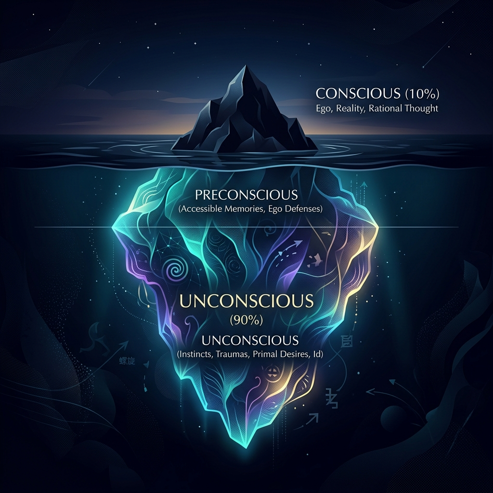

Phân tâm học: Tìm hiểu về "Tiềm thức" và "Vô thức" dưới lăng kính Triết học biện chứng

"Ý thức của con người giống như một tảng băng trôi giữa đại dương: Phần nổi tỉnh táo chỉ chiếm một góc nhỏ, trong khi phần chìm khổng lồ của tiềm thức và vô thức định hình phần lớn hành vi của chúng ta."
Khi nghiên cứu kết cấu của ý thức, Triết học Mác - Lênin chỉ ra rằng ý thức là một hệ thống phức tạp gồm nhiều thành tố khác nhau: **tri thức, tình cảm, ý chí, tự ý thức, tiềm thức và vô thức**. Trong đó, hai khái niệm **tiềm thức** và **vô thức** đã được bác sĩ người Áo **Sigmund Freud** (1856 - 1939) phát triển rực rỡ thành học thuyết **Phân tâm học (Psychoanalysis)**, mở ra chiều sâu nhận thức chưa từng có về tâm lý con người.
1. Cấu trúc tâm trí theo Sigmund Freud
Freud ví tâm trí con người như một cấu trúc ba phần đặc biệt:
- Cái Ấy (Id - Vô thức): Nơi chứa đựng những bản năng nguyên thủy, xung năng sinh học (như đói khát, ham muốn) và những ký ức đau buồn bị dồn nén. Vô thức hoạt động theo nguyên tắc thỏa mãn tức thì.
- Cái Tôi (Ego - Ý thức): Phần tâm trí tỉnh táo, có nhiệm vụ điều hòa các đòi hỏi bản năng của Cái Ấy sao cho phù hợp với quy tắc của hiện thực khách quan bên ngoài.
- Cái Siêu Tôi (Superego - Tiêu chuẩn xã hội): Nơi lưu trữ các quy chuẩn đạo đức, lý tưởng sống do gia đình và xã hội truyền dạy. Nó hoạt động như một quan tòa nội tâm phán xét hành vi của Cái Tôi.
2. Tiềm thức và vai trò của nó trong nhận thức
**Tiềm thức** là những tri thức, kinh nghiệm, thói quen mà con người đã tích lũy và thực hiện thành thục đến mức tự động hóa, tạm thời lắng xuống dưới ngưỡng ý thức tỉnh táo.
Ví dụ, khi mới học lái xe, bạn phải tập trung ý thức cao độ vào từng thao tác côn, số, phanh. Nhưng khi đã thành thạo, tiềm thức sẽ tiếp quản việc điều khiển xe một cách trơn tru, giải phóng dung lượng của ý thức để bạn suy nghĩ về những việc khác. Tiềm thức đóng vai trò giảm tải áp lực cho não bộ, giúp con người xử lý các tình huống quen thuộc cực kỳ nhanh chóng và hiệu quả.
3. Đánh giá của Triết học duy vật biện chứng
Triết học duy vật biện chứng đánh giá cao đóng góp của Phân tâm học trong việc phát hiện ra vai trò của vô thức và tiềm thức đối với đời sống tinh thần. Tuy nhiên, triết học bác bỏ quan điểm duy tâm siêu hình của Freud khi ông tuyệt đối hóa vô thức và coi bản năng sinh dục chi phối mọi hành vi xã hội của con người.
Dưới góc nhìn biện chứng, vô thức và tiềm thức tuy có tính độc lập tương đối, nhưng xét cho cùng, chúng **vẫn chịu sự kiểm soát, định hướng của ý thức tỉnh táo và thực tiễn xã hội**. Bản chất của con người không phải là bản năng thú tính cô độc, mà là **tổng hòa các quan hệ xã hội**. Do đó, ý thức tỉnh táo và đạo đức xã hội luôn đóng vai trò chủ đạo, dẫn dắt con người hướng tới những giá trị chân - thiện - mỹ cao đẹp.
Bài báo gốc: VnExpress, "Phân tâm học và văn học: Đọc cái vô thức". Khám phá sâu sắc về học thuyết phân tâm học của Sigmund Freud, cách cái vô thức biểu hiện qua giấc mơ, hành vi nghệ thuật và các tác phẩm văn học học thuật kinh điển.
open_in_new Xem bài viết gốc trên VnExpress